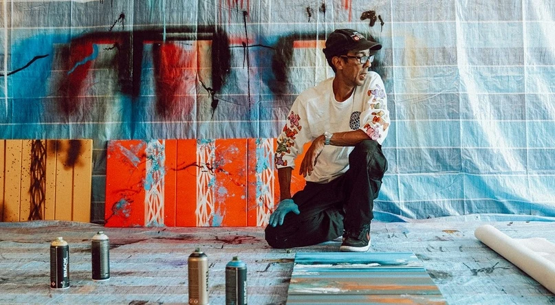
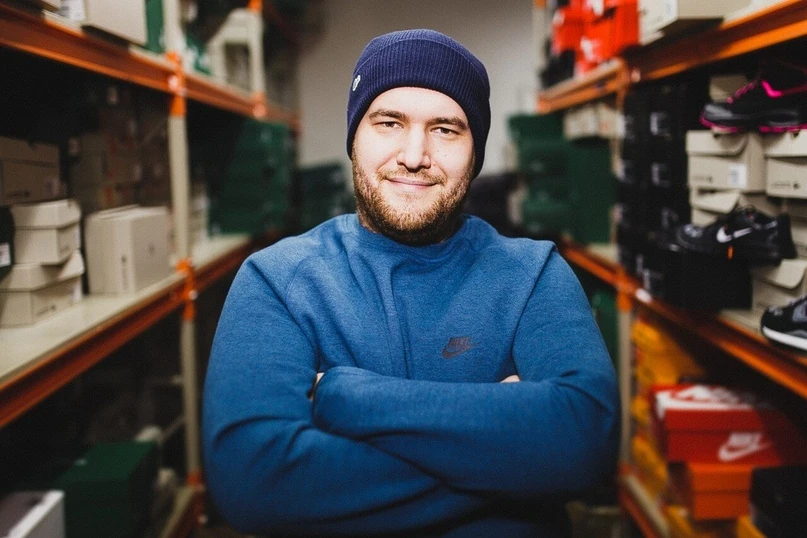
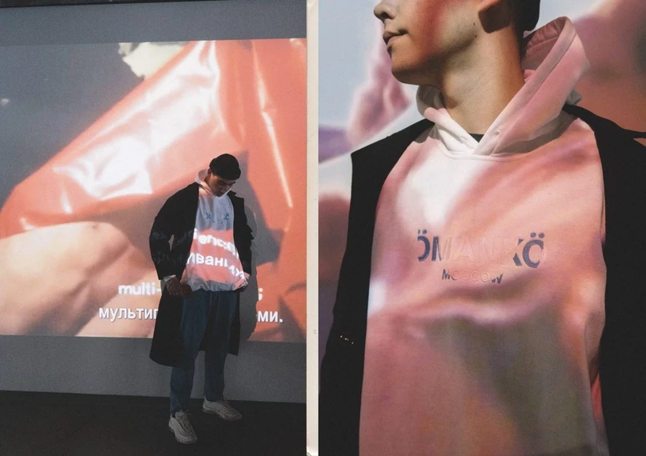
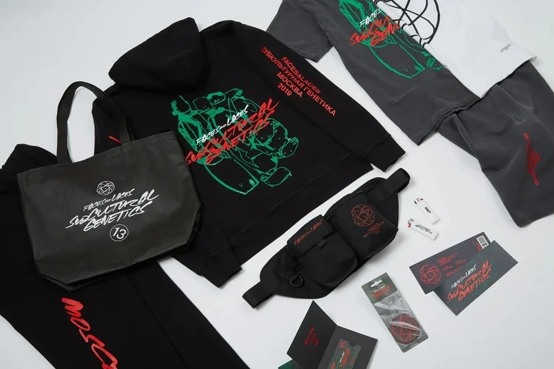
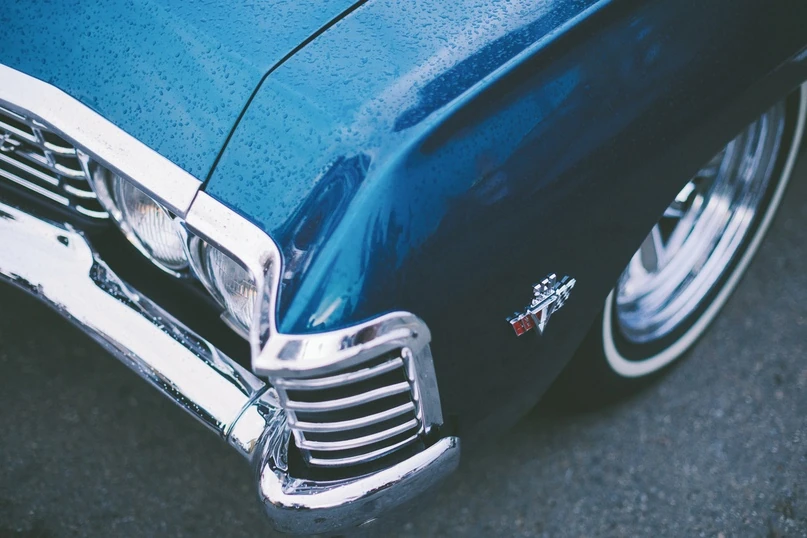
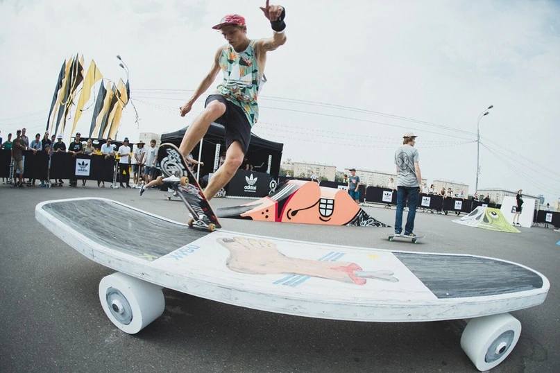

О прелестях этой выставки широкими мазками написало примерно каждое «культурное» СМИ. Теперь же пришло время детально разобрать, что подготовили для нас организаторы.
Хедлайнер художественной программы — FUTURA

Автором графики FACES&LACES в этом году стал Леонард МакГурр — очень крутой и опытный дядя, выставлявшийся в галерейных проектах с Китом Харингом и Жан-Мишелем Баскиа. Его называют пионером нью-йоркской граффити-сцены и родоначальником абстракционизма в этой субкультуре.
На выставке FUTURA создаст масштабную инсталляцию и примет участие в проекте «СИНТЕЗ И ИНТЕГРАЦИЯ». А еще — даст тебе автограф, если отстоишь очередь.
Селекция редких кроссовок от Габонской Гадюки

Если ты пришел на FACES&LACES, скорее всего, где-то поблизости ошивается Дмитрий Егоров. И это прекрасно: кто, если не главный редактор журнала «К.Е.Д.» расскажет фрешменам о кроссовках и их котировках на рынке.
На выставке Габонская Гадюка представит совместный проект с сервисом объявлений «Юла» — коллекцию рарной обуви, модели из которой даже можно будет прикупить.
Кастомизация одежды с ÖMANKÖ

Утащить что-нибудь красивое в свой гардероб — любимая забава всех посетителей FACES&LACES. В этом тебе помогут ребята с онлайн-платформы ÖMANKÖ, которым за последние несколько лет удалось создать действительно громкий российский бренд.
В рамках воркшопа ÖMANKÖ у тебя появится возможность самому кастомизировать выпущенные командой худи, футболки и лонгсливы. Бонусом — размещенный на территории выставки поп-ап с украшениями, созданными в коллабе с петербургскими ювелирами mozi.j
Лимитированная коллекция FACES&LACES

Нужно сразу условиться: карта «Тройка» с айдентикой FACES&LACES — это мастхэв. Впрочем, принты от FUTURA смотрятся хорошо не только на ней. В капсулу вошли еще и худи, штаны, шорты, несколько видов футболок, поясная сумка, зажигалка и внезапно ароматизатор для авто. Кстати, некоторые айтемы из коллекции можно купить уже сейчас.
Артисты главной сцены FACES&LACES
Лайнап главной сцены в лучших традициях честно разделится между двумя днями: крутых исполнителей для вас припасли предостаточно. В субботу тусовку раскачают нью-йоркские панк-хардкорщики SHOW ME THE BODY,бодрые гараж-рокеры из Питера SONIC DEATH, шумные ребята из московской группы «ИСТОЧНИК», тви-поп-музыканты VERBLUDES и лиричные бунтари SSSHHHIIITTT!. Да, и завершится программа этого дня громко — первым в России концертом культового калифорнийского нойзового серф-поп-панк-коллектива WAVVES.
Но и на воскресенье обязательно припасите сил: можно будет оторваться под треки украинского рэпера DELTA ARTHUR и его нью-йоркского коллеги WIKI, послушать чудаковатую музыку казахстанского хип-хоп-проекта «МАСЛО ЧЕРНОГО ТМИНА», а потом вместе с LIL UGLY MANE вспомнить, что такое мемфис-звучание 90-х и чем оно подкупает слушателей. Честь завершить всю эту вакханалию выпала основоположнику локальной «новой рэп-школы» — BOULEVARD DEPO.
Авто- и мотопроекты в рамках SPEEDSHOP

Площадка SPEEDSHOP возьмет под крыло российских авто- и мотолюбителей: мастерские и частные коллекционеры гордо представят тут свои проекты. Благодаря реставраторам Iron Duke вы сможете полюбоваться на свежесобранный Oldsmobile Cutlass — реплику пейс-кара, участвовавшего в гонке «500 миль Индианаполиса». Редко выходящая в свет коллекция SOLOVEY Motor Garage, тачки из секретного гаража Trump Cars, Dodge Charger от Retro Legends Garage и клуб «Бояре» с проектами на базе автомобилей ГАЗ — бегите смотреть, пока есть возможность!
Скейт-контест без лишних формальностей

Долой формализм и занудство, друзья! В этом году скейтбординг на FACES&LACES не ограничивается никакими рамками. Забудьте о судьях и бесконечных предварительных регистрациях на контесты. На сей раз во главе угла — душевность, задор и непосредственность. Чтобы все воспринималось уж совсем привычным и знакомым, организаторы озаботились сооружением соответствующих декораций. Будет весь этот ваш урбанизм и ностальгичная романтика городских улиц — короче, естественная среда обитания ребят, выделывающих на досках замысловатые фортели.